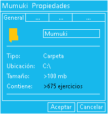

Mumuki
│
├─── Adultos
│ │ Introducción a la Programación.png
│ │
│ ├─── 1 - Fundamentos
│ │ │ 1 - Fundamentos.png
│ │ │
│ │ ├─── 1 - Primeros Programas
│ │ │ Ejercicio 1 - ¡Hola, computadora!.png
│ │ │ Ejercicio 1 - ¡Hola, computadora!.txt
│ │ │ Ejercicio 2 - El Tablero.png
│ │ │ Ejercicio 2 - El Tablero.txt
│ │ │ Ejercicio 3 - El Cabezal.png
│ │ │ Ejercicio 3 - El Cabezal.txt
│ │ │ Ejercicio 4 - Que comience el movimiento.png
│ │ │ Ejercicio 4 - Que comience el movimiento.txt
│ │ │ Ejercicio 5 - Que siga el movimiento.png
│ │ │ Ejercicio 5 - Que siga el movimiento.txt
│ │ │ Ejercicio 6 - Para todos lados.png
│ │ │ Ejercicio 6 - Para todos lados.txt
│ │ │ Ejercicio 7 - El orden de las cosas.png
│ │ │ Ejercicio 7 - El orden de las cosas.txt
│ │ │ Ejercicio 8 - Sí, esto también se puede romper.png
│ │ │ Ejercicio 8 - Sí, esto también se puede romper.txt
│ │ │ Ejercicio 9 - Nuestras primeras bolitas.png
│ │ │ Ejercicio 9 - Nuestras primeras bolitas.txt
│ │ │ Ejercicio 10 - Más y más bolitas.png
│ │ │ Ejercicio 10 - Más y más bolitas.txt
│ │ │ Ejercicio 11 - Poné tus primeras bolitas.png
│ │ │ Ejercicio 11 - Poné tus primeras bolitas.txt
│ │ │ Ejercicio 12 - Sacar Bolitas.png
│ │ │ Ejercicio 12 - Sacar Bolitas.txt
│ │ │ Ejercicio 13 - Cuando no hay bolitas.png
│ │ │ Ejercicio 13 - Cuando no hay bolitas.txt
│ │ │ Ejercicio 14 - Limpiar celda.png
│ │ │ Ejercicio 14 - Limpiar celda.txt
│ │ │
│ │ ├─── 2 - Práctica Primeros Programas
│ │ │ Ejercicio 1 - Calentando motores.png
│ │ │ Ejercicio 1 - Calentando motores.txt
│ │ │ Ejercicio 2 - Combinando comandos.png
│ │ │ Ejercicio 2 - Combinando comandos.txt
│ │ │ Ejercicio 3 - La fila roja.png
│ │ │ Ejercicio 3 - La fila roja.txt
│ │ │ Ejercicio 4 - Una escalerita.png
│ │ │ Ejercicio 4 - Una escalerita.txt
│ │ │ Ejercicio 5 - Portugal.png
│ │ │ Ejercicio 5 - Portugal.txt
│ │ │ Ejercicio 6 - Y ahora una de más cerquita.png
│ │ │ Ejercicio 6 - Y ahora una de más cerquita.txt
│ │ │ Ejercicio 7 - Limpiando el jardín.png
│ │ │ Ejercicio 7 - Limpiando el jardín.txt
│ │ │ Ejercicio 8 - Reemplazar bolitas.png
│ │ │ Ejercicio 8 - Reemplazar bolitas.txt
│ │ │
│ │ ├─── 3 - Procedimientos
│ │ │ Ejercicio 1 - Un programa un poco largo.png
│ │ │ Ejercicio 1 - Un programa un poco largo.txt
│ │ │ Ejercicio 2 - Las cosas por su nombre.png
│ │ │ Ejercicio 2 - Las cosas por su nombre.txt
│ │ │ Ejercicio 3 - Enseñándole tareas a la computadora.png
│ │ │ Ejercicio 3 - Enseñándole tareas a la computadora.txt
│ │ │ Ejercicio 4 - Escribiendo procedimientos.png
│ │ │ Ejercicio 4 - Escribiendo procedimientos.txt
│ │ │ Ejercicio 5 - Una definición, infinitos usos.png
│ │ │ Ejercicio 5 - Una definición, infinitos usos.txt
│ │ │ Ejercicio 6 - Pensando en subtareas.png
│ │ │ Ejercicio 6 - Pensando en subtareas.txt
│ │ │ Ejercicio 7 - Recalculando.png
│ │ │ Ejercicio 7 - Recalculando.txt
│ │ │ Ejercicio 8 - Dibujando un cuadrado con subtareas.png
│ │ │ Ejercicio 8 - Dibujando un cuadrado con subtareas.txt
│ │ │ Ejercicio 9 - Procedimientos con agujeritos.png
│ │ │ Ejercicio 9 - Procedimientos con agujeritos.txt
│ │ │ Ejercicio 10 - Llenando los espacios vacíos.png
│ │ │ Ejercicio 10 - Llenando los espacios vacíos.txt
│ │ │ Ejercicio 11 - DibujarLinea3.png
│ │ │ Ejercicio 11 - DibujarLinea3.txt
│ │ │ Ejercicio 12 - DibujarCuadradoDeLado3.png
│ │ │ Ejercicio 12 - DibujarCuadradoDeLado3.txt
│ │ │ Ejercicio 13 - Pasando varios parámetros.png
│ │ │ Ejercicio 13 - Pasando varios parámetros.txt
│ │ │ Ejercicio 14 - La ley, el orden y el BOOM.png
│ │ │ Ejercicio 14 - La ley, el orden y el BOOM.txt
│ │ │ Ejercicio 15 - Un argumento para dos parámetros.png
│ │ │ Ejercicio 15 - Un argumento para dos parámetros.txt
│ │ │ Ejercicio 16 - La tercera es la vencida.png
│ │ │ Ejercicio 16 - La tercera es la vencida.txt
│ │ │
│ │ ├─── 4 - Práctica Procedimientos
│ │ │ Ejercicio 1 - LineaMulticolor.png
│ │ │ Ejercicio 1 - LineaMulticolor.txt
│ │ │ Ejercicio 2 - CuadradoMulticolor.png
│ │ │ Ejercicio 2 - CuadradoMulticolor.txt
│ │ │ Ejercicio 3 - PonerADistancia3.png
│ │ │ Ejercicio 3 - PonerADistancia3.txt
│ │ │ Ejercicio 4 - PonerPuntos3.png
│ │ │ Ejercicio 4 - PonerPuntos3.txt
│ │ │ Ejercicio 5 - PonerPuntos3, recargado.png
│ │ │ Ejercicio 5 - PonerPuntos3, recargado.txt
│ │ │ Ejercicio 6 - Hay una luz, en esa cruz.png
│ │ │ Ejercicio 6 - Hay una luz, en esa cruz.txt
│ │ │ Ejercicio 7 - Dibujando el Arco Iris.png
│ │ │ Ejercicio 7 - Dibujando el Arco Iris.txt
│ │ │ Ejercicio 8 - Molino Ascendente.png
│ │ │ Ejercicio 8 - Molino Ascendente.txt
│ │ │ Ejercicio 9 - Rojo al borde.png
│ │ │ Ejercicio 9 - Rojo al borde.txt
│ │ │ Ejercicio 10 - Jardín de otoño.png
│ │ │ Ejercicio 10 - Jardín de otoño.txt
│ │ │
│ │ ├─── 5 - Repetición Simple
│ │ │ Ejercicio 1 - MoverOeste10.png
│ │ │ Ejercicio 1 - MoverOeste10.txt
│ │ │ Ejercicio 2 - La computadora repite por nosotros.png
│ │ │ Ejercicio 2 - La computadora repite por nosotros.txt
│ │ │ Ejercicio 3 - MoverOeste5 usando repeat.png
│ │ │ Ejercicio 3 - MoverOeste5 usando repeat.txt
│ │ │ Ejercicio 4 - No todo es repetir.png
│ │ │ Ejercicio 4 - No todo es repetir.txt
│ │ │ Ejercicio 5 - También vale después.png
│ │ │ Ejercicio 5 - También vale después.txt
│ │ │ Ejercicio 6 - Repitiendo varios comandos.png
│ │ │ Ejercicio 6 - Repitiendo varios comandos.txt
│ │ │ Ejercicio 7 - Dónde está el error.png
│ │ │ Ejercicio 7 - Dónde está el error.txt
│ │ │ Ejercicio 8 - Diagonal con una bolita.png
│ │ │ Ejercicio 8 - Diagonal con una bolita.txt
│ │ │ Ejercicio 9 - Diagonal pesada.png
│ │ │ Ejercicio 9 - Diagonal pesada.txt
│ │ │ Ejercicio 10 - El caso borde.png
│ │ │ Ejercicio 10 - El caso borde.txt
│ │ │ Ejercicio 11 - De lado a lado, dibujamos un cuadrado.png
│ │ │ Ejercicio 11 - De lado a lado, dibujamos un cuadrado.txt
│ │ │
│ │ ├─── 6 - Práctica Repetición simple
│ │ │ Ejercicio 1 - Entrando en calor ¡Volviendo!.png
│ │ │ Ejercicio 1 - Entrando en calor ¡Volviendo!.txt
│ │ │ Ejercicio 2 - Una diagonal más ancha.png
│ │ │ Ejercicio 2 - Una diagonal más ancha.
│ │ │ Ejercicio 3 - Pongamos ¡Todo lo que queramos!.png
│ │ │ Ejercicio 3 - Pongamos ¡Todo lo que queramos!.txt
│ │ │ Ejercicio 4 - Día de la Memoria.png
│ │ │ Ejercicio 4 - Día de la Memoria.txt
│ │ │ Ejercicio 5 - Escribir cualquier fecha.png
│ │ │ Ejercicio 5 - Escribir cualquier fecha.txt
│ │ │ Ejercicio 6 - Movamos ¡Todo lo que queramos!.png
│ │ │ Ejercicio 6 - Movamos ¡Todo lo que queramos!.txt
│ │ │ Ejercicio 7 - Los números del reloj.png
│ │ │ Ejercicio 7 - Los números del reloj.txt
│ │ │ Ejercicio 8 - Una línea heavy.png
│ │ │ Ejercicio 8 - Una línea heavy.txt
│ │ │ Ejercicio 9 - Guarda con la guarda.png
│ │ │ Ejercicio 9 - Guarda con la guarda.txt
│ │ │ Ejercicio 10 - Una guarda en L.png
│ │ │ Ejercicio 10 - Una guarda en L.txt
│ │ │
│ │ ├─── 7 - Expresiones
│ │ │ Ejercicio 1 - Muchas formas de decir lo mismo.png
│ │ │ Ejercicio 1 - Muchas formas de decir lo mismo.txt
│ │ │ Ejercicio 2 - La suma de las partes.png
│ │ │ Ejercicio 2 - La suma de las partes.txt
│ │ │ Ejercicio 3 - Qué se hace antes.png
│ │ │ Ejercicio 3 - Qué se hace antes.txt
│ │ │ Ejercicio 4 - La carrera del salmón.png
│ │ │ Ejercicio 4 - La carrera del salmón.txt
│ │ │ Ejercicio 5 - Dos pasos adelante, un paso atrás.png
│ │ │ Ejercicio 5 - Dos pasos adelante, un paso atrás.txt
│ │ │ Ejercicio 6 - Poner al lado.png
│ │ │ Ejercicio 6 - Poner al lado.txt
│ │ │ Ejercicio 7 - La línea que vuelve.png
│ │ │ Ejercicio 7 - La línea que vuelve.txt
│ │ │ Ejercicio 8 - Dibujando una L.png
│ │ │ Ejercicio 8 - Dibujando una L.txt
│ │ │ Ejercicio 9 - Previo a lo siguiente.png
│ │ │ Ejercicio 9 - Previo a lo siguiente.txt
│ │ │ Ejercicio 10 - Siga la flecha.png
│ │ │ Ejercicio 10 - Siga la flecha.txt
│ │ │ Ejercicio 11 - Copiando bolitas.png
│ │ │ Ejercicio 11 - Copiando bolitas.txt
│ │ │ Ejercicio 12 - Sacando bolitas.png
│ │ │ Ejercicio 12 - Sacando bolitas.txt
│ │ │
│ │ ├─── 8 - Alternativa Condicional
│ │ │ Ejercicio 1 - Sacar con miedo.png
│ │ │ Ejercicio 1 - Sacar con miedo.txt
│ │ │ Ejercicio 2 - Sacar con miedo, segundo intento.png
│ │ │ Ejercicio 2 - Sacar con miedo, segundo intento.txt
│ │ │ Ejercicio 3 - Eliminando la bolita roja.png
│ │ │ Ejercicio 3 - Eliminando la bolita roja.txt
│ │ │ Ejercicio 4 - Un ejemplo medio rebuscado.png
│ │ │ Ejercicio 4 - Un ejemplo medio rebuscado.txt
│ │ │ Ejercicio 5 - Y sólo sirve para ver si hay bolitas.png
│ │ │ Ejercicio 5 - Y sólo sirve para ver si hay bolitas.txt
│ │ │ Ejercicio 6 - Un poquito de matemática.png
│ │ │ Ejercicio 6 - Un poquito de matemática.txt
│ │ │ Ejercicio 7 - Cómo decirle que no.png
│ │ │ Ejercicio 7 - Cómo decirle que no.txt
│ │ │ Ejercicio 8 - Dos caminos distintos.png
│ │ │ Ejercicio 8 - Dos caminos distintos.txt
│ │ │ Ejercicio 9 - Un tablero de luces.png
│ │ │ Ejercicio 9 - Un tablero de luces.txt
│ │ │
│ │ └─── 9 - Funciones
│ │ Ejercicio 1 - Y esto, con qué se come.png
│ │ Ejercicio 1 - Y esto, con qué se come.txt
│ │ Ejercicio 2 - La importancia de nombrar las cosas.png
│ │ Ejercicio 2 - La importancia de nombrar las cosas.txt
│ │ Ejercicio 3 - MoverSegunBolitas, versión 2.png
│ │ Ejercicio 3 - MoverSegunBolitas, versión 2.txt
│ │ Ejercicio 4 - todasExcepto.png
│ │ Ejercicio 4 - todasExcepto.txt
│ │ Ejercicio 5 - Una función de otro tipo.png
│ │ Ejercicio 5 - Una función de otro tipo.txt
│ │ Ejercicio 6 - En libertad.png
│ │ Ejercicio 6 - En libertad.txt
│ │ Ejercicio 7 - Cualquier bolita nos deja bien.png
│ │ Ejercicio 7 - Cualquier bolita nos deja bien.txt
│ │ Ejercicio 8 - Siempre al borde.png
│ │ Ejercicio 8 - Siempre al borde.txt
│ │ Ejercicio 9 - Las compañeras ideales.png
│ │ Ejercicio 9 - Las compañeras ideales.txt
│ │ Ejercicio 10 - Lo ideal también se puede romper.png
│ │ Ejercicio 10 - Lo ideal también se puede romper.txt
│ │ Ejercicio 11 - Hay bolitas lejos.png
│ │ Ejercicio 11 - Hay bolitas lejos.txt
│ │ Ejercicio 12 - Estoy rodeado de viejas bolitas.png
│ │ Ejercicio 12 - Estoy rodeado de viejas bolitas.txt
│ │ Ejercicio 13 - Sin límites.png
│ │ Ejercicio 13 - Sin límites.txt
│ │
│ │ ├─── 10 - Practica Igualmente Conectados
│ │ │ Ejercicio 1 - Chau bolitas.png
│ │ │ Ejercicio 1 - Chau bolitas.txt
│ │ │ Ejercicio 2 - Chau bolitas 2.png
│ │ │ Ejercicio 2 - Chau bolitas 2.txt
│ │ │ Ejercicio 3 - Entregando netbooks.png
│ │ │ Ejercicio 3 - Entregando netbooks.txt
│ │ │ Ejercicio 4 - Nuevas directivas.png
│ │ │ Ejercicio 4 - Nuevas directivas.txt
│ │ │ Ejercicio 5 - El informe.png
│ │ │ Ejercicio 5 - El informe.txt
│ │ │ Ejercicio 6 - El trabajo en la escuela.png
│ │ │ Ejercicio 6 - El trabajo en la escuela.txt
│ │ │ Ejercicio 7 - Escuelas públicas y privadas.png
│ │ │ Ejercicio 7 - Escuelas públicas y privadas.txt
│ │ │ Ejercicio 8 - Hay que salir a la calle.png
│ │ │ Ejercicio 8 - Hay que salir a la calle.txt
│ │ │ Ejercicio 9 - Conociendo la ciudad.png
│ │ │ Ejercicio 9 - Conociendo la ciudad.txt
│ │ │
│ │ ├─── 11 - Repetición condicional
│ │ │ Ejercicio 1 - Ir al extremo.png
│ │ │ Ejercicio 1 - Ir al extremo.txt
│ │ │ Ejercicio 2 - Salirse de la raya.png
│ │ │ Ejercicio 2 - Salirse de la raya.txt
│ │ │ Ejercicio 3 - Hasta el infinito y no mucho más allá.png
│ │ │ Ejercicio 3 - Hasta el infinito y no mucho más allá.txt
│ │ │ Ejercicio 4 - Un bucle no tan obvio.png
│ │ │ Ejercicio 4 - Un bucle no tan obvio.txt
│ │ │ Ejercicio 5 - La alfombra roja.png
│ │ │ Ejercicio 5 - La alfombra roja.txt
│ │ │ Ejercicio 6 - Fin de fiesta.png
│ │ │ Ejercicio 6 - Fin de fiesta.txt
│ │ │ Ejercicio 7 - Alex, el viajero.png
│ │ │ Ejercicio 7 - Alex, el viajero.txt
│ │ │ Ejercicio 8 - Cuando hay hambre.png
│ │ │ Ejercicio 8 - Cuando hay hambre.txt
│ │ │ Ejercicio 9 - Primer obstáculo - la montaña.png
│ │ │ Ejercicio 9 - Primer obstáculo - la montaña.txt
│ │ │ Ejercicio 10 - Segundo obstáculo - la maleza.png
│ │ │ Ejercicio 10 - Segundo obstáculo - la maleza.txt
│ │ │ Ejercicio 11 - Campo de plantas.png
│ │ │ Ejercicio 11 - Campo de plantas.txt
│ │ │ Ejercicio 12 - El túnel.png
│ │ │ Ejercicio 12 - El túnel.txt
│ │ │
│ ├─── 2 - Programación Imperativa
│ │ │ 2 - Programación Imperativa.png
│ │ │
│ │ ├─── 1 - Funciones y tipos de datos
│ │ │ Ejercicio 1 - Introducción a JavaScript.png
│ │ │ Ejercicio 1 - Introducción a JavaScript.txt
│ │ │ Ejercicio 2 - Funciones, definición.png
│ │ │ Ejercicio 2 - Funciones, definición.txt
│ │ │ Ejercicio 3 - Funciones, uso.png
│ │ │ Ejercicio 3 - Funciones, uso.txt
│ │ │ Ejercicio 4 - Probando funciones.png
│ │ │ Ejercicio 4 - Probando funciones.txt
│ │ │ Ejercicio 5 - Haciendo cuentas.png
│ │ │ Ejercicio 5 - Haciendo cuentas.txt
│ │ │ Ejercicio 6 - Poniendo topes.png
│ │ │ Ejercicio 6 - Poniendo topes.txt
│ │ │ Ejercicio 7 - Libros de la buena memoria.png
│ │ │ Ejercicio 7 - Libros de la buena memoria.txt
│ │ │ Ejercicio 8 - Booleanos.png
│ │ │ Ejercicio 8 - Booleanos.txt
│ │ │ Ejercicio 9 - Palabras, sólo palabras.png
│ │ │ Ejercicio 9 - Palabras, sólo palabras.txt
│ │ │ Ejercicio 10 - Operando strings.png
│ │ │ Ejercicio 10 - Operando strings.txt
│ │ │ Ejercicio 11 - ¡GRITAR!.png
│ │ │ Ejercicio 11 - ¡GRITAR!.txt
│ │ │ Ejercicio 12 - Y qué tal si.png
│ │ │ Ejercicio 12 - Y qué tal si.txt
│ │ │ Ejercicio 13 - De qué signo sos.png
│ │ │ Ejercicio 13 - De qué signo sos.txt
│ │ │ Ejercicio 14 - El retorno del booleano.png
│ │ │ Ejercicio 14 - El retorno del booleano.txt
│ │ │ Ejercicio 15 - Los premios.png
│ │ │ Ejercicio 15 - Los premios.txt
│ │ │ Ejercicio 16 - Tipos de datos.png
│ │ │ Ejercicio 16 - Tipos de datos.txt
│ │ │ Ejercicio 17 - Datos de todo tipo.png
│ │ │ Ejercicio 17 - Datos de todo tipo.txt
│ │ │
│ │ ├─── 2 - Práctica Funciones y Tipos de Datos
│ │ │ Ejercicio 1 - Comprando Hardware.png
│ │ │ Ejercicio 1 - Comprando Hardware.txt
│ │ │ Ejercicio 2 - Me conviene.png
│ │ │ Ejercicio 2 - Me conviene.txt
│ │ │ Ejercicio 3 - Triangulos.png
│ │ │ Ejercicio 3 - Triangulos.txt
│ │ │ Ejercicio 4 - Cuadrados.png
│ │ │ Ejercicio 4 - Cuadrados.txt
│ │ │ Ejercicio 5 - Está afinado.png
│ │ │ Ejercicio 5 - Está afinado.txt
│ │ │ Ejercicio 6 - Está cerca.png
│ │ │ Ejercicio 6 - Está cerca.txt
│ │ │ Ejercicio 7 - Cartelitos.png
│ │ │ Ejercicio 7 - Cartelitos.txt
│ │ │ Ejercicio 8 - Más Cartelitos.png
│ │ │ Ejercicio 8 - Más Cartelitos.txt
│ │ │ Ejercicio 9 - Cartelitos óptimos.png
│ │ │ Ejercicio 9 - Cartelitos óptimos.txt
│ │ │ Ejercicio 10 - Cara o ceca.png
│ │ │ Ejercicio 10 - Cara o ceca.txt
│ │ │ Ejercicio 11 - ¡Envido!.png
│ │ │ Ejercicio 11 - ¡Envido!.txt
│ │ │ Ejercicio 12 - ¡Quiero retruco!.png
│ │ │ Ejercicio 12 - ¡Quiero retruco!.txt
│ │ │ Ejercicio 13 - ¡Quiero vale cuatro!.png
│ │ │ Ejercicio 13 - ¡Quiero vale cuatro!.txt
│ │ │
│ │ ├─── 3 - Variables y procedimientos
│ │ │ Ejercicio 1 - Y el tablero.png
│ │ │ Ejercicio 1 - Y el tablero.txt
│ │ │ Ejercicio 2 - Impresión por pantalla.png
│ │ │ Ejercicio 2 - Impresión por pantalla.txt
│ │ │ Ejercicio 3 - Martin Fierro.png
│ │ │ Ejercicio 3 - Martin Fierro.txt
│ │ │ Ejercicio 4 - Y los procedimientos.png
│ │ │ Ejercicio 4 - Y los procedimientos.txt
│ │ │ Ejercicio 5 - Y el program.png
│ │ │ Ejercicio 5 - Y el program.txt
│ │ │ Ejercicio 6 - Coerciones.png
│ │ │ Ejercicio 6 - Coerciones.txt
│ │ │ Ejercicio 7 - El círculo de la vida.png
│ │ │ Ejercicio 7 - El círculo de la vida.txt
│ │ │ Ejercicio 8 - PIenso que así es más fácil.png
│ │ │ Ejercicio 8 - PIenso que así es más fácil.txt
│ │ │ Ejercicio 9 - Esto no tiene valor.png
│ │ │ Ejercicio 9 - Esto no tiene valor.txt
│ │ │ Ejercicio 10 - Variables globales.png
│ │ │ Ejercicio 10 - Variables globales.txt
│ │ │ Ejercicio 11 - La buena fortuna.png
│ │ │ Ejercicio 11 - La buena fortuna.txt
│ │ │ Ejercicio 12 - Y esto cuánto vale.png
│ │ │ Ejercicio 12 - Y esto cuánto vale.txt
│ │ │
│ │ ├─── 4 - Lógico booleana
│ │ │ Ejercicio 1 - ¡Que el último apague la luz!.png
│ │ │ Ejercicio 1 - ¡Que el último apague la luz!.txt
│ │ │ Ejercicio 2 - Negar no cuesta nada.png
│ │ │ Ejercicio 2 - Negar no cuesta nada.txt
│ │ │ Ejercicio 3 - Los peripatéticos.png
│ │ │ Ejercicio 3 - Los peripatéticos.txt
│ │ │ Ejercicio 4 - La verdad detrás de la conjunción.png
│ │ │ Ejercicio 4 - La verdad detrás de la conjunción.txt
│ │ │ Ejercicio 5 - ¡Juguemos al TEG!.png
│ │ │ Ejercicio 5 - ¡Juguemos al TEG!.txt
│ │ │ Ejercicio 6 - Y ahora quién podrá ayudarnos.png
│ │ │ Ejercicio 6 - Y ahora quién podrá ayudarnos.txt
│ │ │ Ejercicio 7 - ¡Buen día!.png
│ │ │ Ejercicio 7 - ¡Buen día!.txt
│ │ │ Ejercicio 8 - La verdad es que no hay una verdad.png
│ │ │ Ejercicio 8 - La verdad es que no hay una verdad.txt
│ │ │ Ejercicio 9 - ¡Hola! Mi nombre es Xor.png
│ │ │ Ejercicio 9 - ¡Hola! Mi nombre es Xor.txt
│ │ │ Ejercicio 10 - Precedencia.png
│ │ │ Ejercicio 10 - Precedencia.txt
│ │ │ Ejercicio 11 - Un ejercicio sin precedentes.png
│ │ │ Ejercicio 11 - Un ejercicio sin precedentes.txt
│ │ │ Ejercicio 12 - Puedo subir.png
│ │ │ Ejercicio 12 - Puedo subir.txt
│ │ │
│ │ ├─── 5 - Listas
│ │ │ Ejercicio 1 - Series favoritas.png
│ │ │ Ejercicio 1 - Series favoritas.txt
│ │ │ Ejercicio 2 - Y esto, es una lista.png
│ │ │ Ejercicio 2 - Y esto, es una lista.txt
│ │ │ Ejercicio 3 - Juegos de azar.png
│ │ │ Ejercicio 3 - Juegos de azar.txt
│ │ │ Ejercicio 4 - Listas vacías.png
│ │ │ Ejercicio 4 - Listas vacías.txt
│ │ │ Ejercicio 5 - Cuántos elementos tenés.png
│ │ │ Ejercicio 5 - Cuántos elementos tenés.txt
│ │ │ Ejercicio 6 - Agregando sabor.png
│ │ │ Ejercicio 6 - Agregando sabor.txt
│ │ │ Ejercicio 7 - Trasladar.png
│ │ │ Ejercicio 7 - Trasladar.txt
│ │ │ Ejercicio 8 - Y dónde está.png
│ │ │ Ejercicio 8 - Y dónde está.txt
│ │ │ Ejercicio 9 - Contiene.png
│ │ │ Ejercicio 9 - Contiene.txt
│ │ │ Ejercicio 10 - Enésimo elemento.png
│ │ │ Ejercicio 10 - Enésimo elemento.txt
│ │ │ Ejercicio 11 - Más premios.png
│ │ │ Ejercicio 11 - Más premios.txt
│ │ │ Ejercicio 12 - No te olvides de saludar.png
│ │ │ Ejercicio 12 - No te olvides de saludar.txt
│ │ │
│ │ ├─── 6 - Registros
│ │ │ Ejercicio 1 - Los primeros registros.png
│ │ │ Ejercicio 1 - Los primeros registros.txt
│ │ │ Ejercicio 2 - Tu propio monumento.png
│ │ │ Ejercicio 2 - Tu propio monumento.txt
│ │ │ Ejercicio 3 - Accediendo al campo.png
│ │ │ Ejercicio 3 - Accediendo al campo.txt
│ │ │ Ejercicio 4 - Temperatura de planeta.png
│ │ │ Ejercicio 4 - Temperatura de planeta.txt
│ │ │ Ejercicio 5 - Moviendo archivos.png
│ │ │ Ejercicio 5 - Moviendo archivos.txt
│ │ │ Ejercicio 6 - Registros de dos milenios.png
│ │ │ Ejercicio 6 - Registros de dos milenios.txt
│ │ │ Ejercicio 7 - Postres complejos.png
│ │ │ Ejercicio 7 - Postres complejos.txt
│ │ │ Ejercicio 8 - Listas de registros.png
│ │ │ Ejercicio 8 - Listas de registros.txt
│ │ │ Ejercicio 9 - 60 dulces minutos.png
│ │ │ Ejercicio 9 - 60 dulces minutos.txt
│ │ │ Ejercicio 10 - Hay un registro en mi registro.png
│ │ │ Ejercicio 10 - Hay un registro en mi registro.txt
│ │ │ Ejercicio 11 - ¡Azúcar!.png
│ │ │ Ejercicio 11 - ¡Azúcar!.txt
│ │ │
│ │ └─── 7 - Recorridos
│ │ Ejercicio 1 - Las ganancias semestrales.png
│ │ Ejercicio 1 - Las ganancias semestrales.txt
│ │ Ejercicio 2 - Y el resto de las ganancias.png
│ │ Ejercicio 2 - Y el resto de las ganancias.txt
│ │ Ejercicio 3 - Todas las ganancias, la ganancia.png
│ │ Ejercicio 3 - Todas las ganancias, la ganancia.txt
│ │ Ejercicio 4 - Nos visita un viejo amigo.png
│ │ Ejercicio 4 - Nos visita un viejo amigo.txt
│ │ Ejercicio 5 - Cuentas claras.png
│ │ Ejercicio 5 - Cuentas claras.txt
│ │ Ejercicio 6 - La ganancia promedio.png
│ │ Ejercicio 6 - La ganancia promedio.txt
│ │ Ejercicio 7 - Quién gana, quién pierde.png
│ │ Ejercicio 7 - Quién gana, quién pierde.txt
│ │ Ejercicio 8 - Soy el mapa, soy el mapa.png
│ │ Ejercicio 8 - Soy el mapa, soy el mapa.txt
│ │ Ejercicio 9 - A filtrar, a filtrar cada cosa en su lugar.png
│ │ Ejercicio 9 - A filtrar, a filtrar cada cosa en su lugar.txt
│ │ Ejercicio 10 - Un promedio más positivo.png
│ │ Ejercicio 10 - Un promedio más positivo.txt
│ │ Ejercicio 11 - Esto es lo máximo.png
│ │ Ejercicio 11 - Esto es lo máximo.txt
│ │ Ejercicio 12 - Como mínimo.png
│ │ Ejercicio 12 - Como mínimo.txt
│ │ Ejercicio 13 - Los mejores meses del año.png
│ │ Ejercicio 13 - Los mejores meses del año.txt
│ │ Ejercicio 14 - Publicaciones muy especiales.png
│ │ Ejercicio 14 - Publicaciones muy especiales.txt
│ │
│ ├─── 3 - Programación Funcional
│ │ │ 3 - Programación Funcional.png
│ │ │
│ │ ├─── 1 - Valores y Funciones
│ │ │ Ejercicio 1 - Paradigmas para qué.png
│ │ │ Ejercicio 1 - Paradigmas para qué.txt
│ │ │ Ejercicio 2 - Los números.png
│ │ │ Ejercicio 2 - Los números.txt
│ │ │ Ejercicio 3 - Valores y variables.png
│ │ │ Ejercicio 3 - Valores y variables.txt
│ │ │ Ejercicio 4 - Más valores.png
│ │ │ Ejercicio 4 - Más valores.txt
│ │ │ Ejercicio 5 - Las Funciones.png
│ │ │ Ejercicio 5 - Las Funciones.txt
│ │ │ Ejercicio 6 - Más funciones.png
│ │ │ Ejercicio 6 - Más funciones.txt
│ │ │ Ejercicio 7 - Los booleanos.png
│ │ │ Ejercicio 7 - Los booleanos.txt
│ │ │ Ejercicio 8 - Múltiples parámetros.png
│ │ │ Ejercicio 8 - Múltiples parámetros.txt
│ │ │ Ejercicio 9 - Triángulos.png
│ │ │ Ejercicio 9 - Triángulos.txt
│ │ │ Ejercicio 10 - Combinando funciones.png
│ │ │ Ejercicio 10 - Combinando funciones.txt
│ │ │ Ejercicio 11 - Composición.png
│ │ │ Ejercicio 11 - Composición.txt
│ │ │ Ejercicio 12 - Más composición.png
│ │ │ Ejercicio 12 - Más composición.txt
│ │ │ Ejercicio 13 - Los operadores son funciones.png
│ │ │ Ejercicio 13 - Los operadores son funciones.txt
│ │ │ Ejercicio 14 - Juguemos con strings.png
│ │ │ Ejercicio 14 - Juguemos con strings.txt
│ │ │
│ │ ├─── 2 - Práctica Valores y Funciones
│ │ │ Ejercicio 1 - siguiente.png
│ │ │ Ejercicio 1 - siguiente.txt
│ │ │ Ejercicio 2 - mitad.png
│ │ │ Ejercicio 2 - mitad.txt
│ │ │ Ejercicio 3 - inversa.png
│ │ │ Ejercicio 3 - inversa.txt
│ │ │ Ejercicio 4 - esNumeroPositivo.png
│ │ │ Ejercicio 4 - esNumeroPositivo.txt
│ │ │ Ejercicio 5 - comienzaConA.png
│ │ │ Ejercicio 5 - comienzaConA.txt
│ │ │ Ejercicio 6 - esMultiploDeTres.png
│ │ │ Ejercicio 6 - esMultiploDeTres.txt
│ │ │ Ejercicio 7 - esMultiploDe.png
│ │ │ Ejercicio 7 - esMultiploDe.txt
│ │ │ Ejercicio 8 - esMasLargoQue.png
│ │ │ Ejercicio 8 - esMasLargoQue.txt
│ │ │ Ejercicio 9 - Hagamos un paréntesis.png
│ │ │ Ejercicio 9 - Hagamos un paréntesis.txt
│ │ │ Ejercicio 10 - esBisiesto.png
│ │ │ Ejercicio 10 - esBisiesto.txt
│ │ │ Ejercicio 11 - deCelsiusAFarenheit.png
│ │ │ Ejercicio 11 - deCelsiusAFarenheit.txt
│ │ │ Ejercicio 12 - deFarenheitACelsius.png
│ │ │ Ejercicio 12 - deFarenheitACelsius.txt
│ │ │ Ejercicio 13 - Hace frio.png
│ │ │ Ejercicio 13 - Hace frio.txt
│ │ │ Ejercicio 14 - Dispersión.png
│ │ │ Ejercicio 14 - Dispersión.txt
│ │ │ Ejercicio 15 - Pasan los días.png
│ │ │ Ejercicio 15 - Pasan los días.txt
│ │ │ Ejercicio 16 - Pinos.png
│ │ │ Ejercicio 16 - Pinos.txt
│ │ │
│ │ ├─── 3 - Introducción a los Tipos de Datos
│ │ │ Ejercicio 1 - Juguemos un rato.png
│ │ │ Ejercicio 1 - Juguemos un rato.txt
│ │ │ Ejercicio 2 - Operaciones sobre valores.png
│ │ │ Ejercicio 2 - Operaciones sobre valores.txt
│ │ │ Ejercicio 3 - Un poquito de inferencia.png
│ │ │ Ejercicio 3 - Un poquito de inferencia.txt
│ │ │ Ejercicio 4 - Un poco más de inferencia.png
│ │ │ Ejercicio 4 - Un poco más de inferencia.txt
│ │ │ Ejercicio 5 - Inferencia y composición.png
│ │ │ Ejercicio 5 - Inferencia y composición.txt
│ │ │ Ejercicio 6 - Inferencia y composición, revisada.png
│ │ │ Ejercicio 6 - Inferencia y composición, revisada.txt
│ │ │ Ejercicio 7 - Tipando constantes.png
│ │ │ Ejercicio 7 - Tipando constantes.txt
│ │ │ Ejercicio 8 - Tipando funciones.png
│ │ │ Ejercicio 8 - Tipando funciones.txt
│ │ │ Ejercicio 9 - Tipando más funciones.png
│ │ │ Ejercicio 9 - Tipando más funciones.txt
│ │ │ Ejercicio 10 - ¡Clases de tipos!.png
│ │ │ Ejercicio 10 - ¡Clases de tipos!.txt
│ │ │ Ejercicio 11 - Tipos enteros y no tanto.png
│ │ │ Ejercicio 11 - Tipos enteros y no tanto.txt
│ │ │ Ejercicio 12 - Más clases de tipos.png
│ │ │ Ejercicio 12 - Más clases de tipos.txt
│ │ │ Ejercicio 13 - Restricciones múltiples.png
│ │ │ Ejercicio 13 - Restricciones múltiples.txt
│ │ │ Ejercicio 14 - Funciones muy, muy genéricas.png
│ │ │ Ejercicio 14 - Funciones muy, muy genéricas.txt
│ │ │ Ejercicio 15 - Juntando todo.png
│ │ │ Ejercicio 15 - Juntando todo.txt
│ │ │
│ │ ├─── 4 - Práctica de Inferencia de Tipos
│ │ │ Ejercicio 1 - mitad.png
│ │ │ Ejercicio 1 - mitad.txt
│ │ │ Ejercicio 2 - esParO.png
│ │ │ Ejercicio 2 - esParO.txt
│ │ │ Ejercicio 3 - sumarDos.png
│ │ │ Ejercicio 3 - sumarDos.txt
│ │ │ Ejercicio 4 - multiplicar.png
│ │ │ Ejercicio 4 - multiplicar.txt
│ │ │ Ejercicio 5 - fueraDeRango.png
│ │ │ Ejercicio 5 - fueraDeRango.txt
│ │ │ Ejercicio 6 - longitudPar.png
│ │ │ Ejercicio 6 - longitudPar.txt
│ │ │ Ejercicio 7 - largoDelShow.png
│ │ │ Ejercicio 7 - largoDelShow.txt
│ │ │ Ejercicio 8 - sumaEsPar.png
│ │ │ Ejercicio 8 - sumaEsPar.txt
│ │ │ Ejercicio 9 - Máximos y mínimos.png
│ │ │ Ejercicio 9 - Máximos y mínimos.txt
│ │ │ Ejercicio 10 - Constantemente.png
│ │ │ Ejercicio 10 - Constantemente.txt
│ │ │ Ejercicio 11 - No tan distintos.png
│ │ │ Ejercicio 11 - No tan distintos.txt
│ │ │
│ │ ├─── 5 - Aplicación Parcial y Orden Superior
│ │ │ Ejercicio 1 - Aplicación.png
│ │ │ Ejercicio 1 - Aplicación.txt
│ │ │ Ejercicio 2 - Aplicación incompleta.png
│ │ │ Ejercicio 2 - Aplicación incompleta.txt
│ │ │ Ejercicio 3 - Aplicación Parcial , Parte 1.png
│ │ │ Ejercicio 3 - Aplicación Parcial , Parte 1.txt
│ │ │ Ejercicio 4 - Aplicación Parcial, Parte 2.png
│ │ │ Ejercicio 4 - Aplicación Parcial, Parte 2.txt
│ │ │ Ejercicio 5 - Un saludo superior, Parte 1.png
│ │ │ Ejercicio 5 - Un saludo superior, Parte 1.txt
│ │ │ Ejercicio 6 - Un saludo superior, parte 2.png
│ │ │ Ejercicio 6 - Un saludo superior, parte 2.txt
│ │ │ Ejercicio 7 - Un saludo superior, Parte 3.png
│ │ │ Ejercicio 7 - Un saludo superior, Parte 3.txt
│ │ │ Ejercicio 8 - Un Saludo Superior, Parte 4.png
│ │ │ Ejercicio 8 - Un Saludo Superior, Parte 4.txt
│ │ │ Ejercicio 9 - esMenorSegun.png
│ │ │ Ejercicio 9 - esMenorSegun.txt
│ │ │ Ejercicio 10 - Tipos y Orden Superior.png
│ │ │ Ejercicio 10 - Tipos y Orden Superior.txt
│ │ │ Ejercicio 11 - Tipos complicados.png
│ │ │ Ejercicio 11 - Tipos complicados.txt
│ │ │ Ejercicio 12 - Juntando todo.png
│ │ │ Ejercicio 12 - Juntando todo.txt
│ │ │ Ejercicio 13 - Para cerrar.png
│ │ │ Ejercicio 13 - Para cerrar.txt
│ │ │
│ │ ├─── 6 - Prácica Aplicación Parcial y Orden Superior
│ │ │ Ejercicio 1 - esMultiploDe.png
│ │ │ Ejercicio 1 - esMultiploDe.txt
│ │ │ Ejercicio 2 - esBisiesto.png
│ │ │ Ejercicio 2 - esBisiesto.txt
│ │ │ Ejercicio 3 - dobleDelLargo.png
│ │ │ Ejercicio 3 - dobleDelLargo.txt
│ │ │ Ejercicio 4 - sumarNumeroAlTriple.png
│ │ │ Ejercicio 4 - sumarNumeroAlTriple.txt
│ │ │ Ejercicio 5 - sumaEsPar.png
│ │ │ Ejercicio 5 - sumaEsPar.txt
│ │ │ Ejercicio 6 - Cuánto paga cada uno.png
│ │ │ Ejercicio 6 - Cuánto paga cada uno.txt
│ │ │ Ejercicio 7 - algunoCumple.png
│ │ │ Ejercicio 7 - algunoCumple.txt
│ │ │ Ejercicio 8 - mejor.png
│ │ │ Ejercicio 8 - mejor.txt
│ │ │ Ejercicio 9 - Conozcamos a las tuplas.png
│ │ │ Ejercicio 9 - Conozcamos a las tuplas.txt
│ │ │ Ejercicio 10 - aplicarPar.png
│ │ │ Ejercicio 10 - aplicarPar.txt
│ │ │ Ejercicio 11 - tuplaDeFunciones.png
│ │ │ Ejercicio 11 - tuplaDeFunciones.txt
│ │ │ Ejercicio 12 - darVuelta.png
│ │ │ Ejercicio 12 - darVuelta.txt
│ │ │ Ejercicio 13 - Composición.png
│ │ │ Ejercicio 13 - Composición.txt
│ │ │
│ │ ├─── 7 - Alternativas, Guardas y Patrones
│ │ │ Ejercicio 1 - Guardas - Básico.png
│ │ │ Ejercicio 1 - Guardas - Básico.txt
│ │ │ Ejercicio 2 - Otherwise.png
│ │ │ Ejercicio 2 - Otherwise.txt
│ │ │ Ejercicio 3 - Orden de las Condiciones.png
│ │ │ Ejercicio 3 - Orden de las Condiciones.txt
│ │ │ Ejercicio 4 - No todo lo que brilla es Oro.png
│ │ │ Ejercicio 4 - No todo lo que brilla es Oro.txt
│ │ │ Ejercicio 5 - Pattern Matching, Introducción.png
│ │ │ Ejercicio 5 - Pattern Matching, Introducción.txt
│ │ │ Ejercicio 6 - Cuando los patrones no encajan.png
│ │ │ Ejercicio 6 - Cuando los patrones no encajan.txt
│ │ │ Ejercicio 7 - Variable Anónima.png
│ │ │ Ejercicio 7 - Variable Anónima.txt
│ │ │ Ejercicio 8 - Pausa - Volvieron los tipos.png
│ │ │ Ejercicio 8 - Pausa - Volvieron los tipos.txt
│ │ │ Ejercicio 9 - Puntos Para Setenta!.png
│ │ │ Ejercicio 9 - Puntos Para Setenta!.txt
│ │ │ Ejercicio 10 - Tuplas.png
│ │ │ Ejercicio 10 - Tuplas.txt
│ │ │ Ejercicio 11 - Tipando tuplas.png
│ │ │ Ejercicio 11 - Tipando tuplas.txt
│ │ │ Ejercicio 12 - Pattern Matching con Tuplas.png
│ │ │ Ejercicio 12 - Pattern Matching con Tuplas.txt
│ │ │ Ejercicio 13 - Gran poder, gran responsalibidad.png
│ │ │ Ejercicio 13 - Gran poder, gran responsalibidad.txt
│ │ │
│ │ ├─── 8 - Listas
│ │ │ Ejercicio 1 - Cuántos hay.png
│ │ │ Ejercicio 1 - Cuántos hay.txt
│ │ │ Ejercicio 2 - Muchos elementos.png
│ │ │ Ejercicio 2 - Muchos elementos.txt
│ │ │ Ejercicio 3 - Listas de caracteres.png
│ │ │ Ejercicio 3 - Listas de caracteres.txt
│ │ │ Ejercicio 4 - algunosTuits.png
│ │ │ Ejercicio 4 - algunosTuits.txt
│ │ │ Ejercicio 5 - FAQ.png
│ │ │ Ejercicio 5 - FAQ.txt
│ │ │ Ejercicio 6 - Mapeando ando.png
│ │ │ Ejercicio 6 - Mapeando ando.txt
│ │ │ Ejercicio 7 - El tipo de map.png
│ │ │ Ejercicio 7 - El tipo de map.txt
│ │ │ Ejercicio 8 - Textos.png
│ │ │ Ejercicio 8 - Textos.txt
│ │ │ Ejercicio 9 - Recortar tuits.png
│ │ │ Ejercicio 9 - Recortar tuits.txt
│ │ │ Ejercicio 10 - Tuit corto.png
│ │ │ Ejercicio 10 - Tuit corto.txt
│ │ │ Ejercicio 11 - cantidadTuitsCortos.png
│ │ │ Ejercicio 11 - cantidadTuitsCortos.txt
│ │ │ Ejercicio 12 - El tipo de filter.png
│ │ │ Ejercicio 12 - El tipo de filter.txt
│ │ │ Ejercicio 13 - Resumir.png
│ │ │ Ejercicio 13 - Resumir.txt
│ │ │ Ejercicio 14 - Creá tu propio csv.png
│ │ │ Ejercicio 14 - Creá tu propio csv.txt
│ │ │
│ │ └─── 9 - Práctica Listas
│ │ Ejercicio 1 - sumarSegun.png
│ │ Ejercicio 1 - sumarSegun.txt
│ │ Ejercicio 2 - alguno.png
│ │ Ejercicio 2 - alguno.txt
│ │ Ejercicio 3 - esCapicua.png
│ │ Ejercicio 3 - esCapicua.txt
│ │ Ejercicio 4 - esMultiploDeAlguno.png
│ │ Ejercicio 4 - esMultiploDeAlguno.txt
│ │ Ejercicio 5 - Llamadas.png
│ │ Ejercicio 5 - Llamadas.txt
│ │ Ejercicio 6 - Más llamadas.png
│ │ Ejercicio 6 - Más llamadas.txt
│ │ Ejercicio 7 - promedios.png
│ │ Ejercicio 7 - promedios.txt
│ │ Ejercicio 8 - promediosSinAplazos.png
│ │ Ejercicio 8 - promediosSinAplazos.txt
│ │ Ejercicio 9 - mejoresNotas.png
│ │ Ejercicio 9 - mejoresNotas.txt
│ │ Ejercicio 10 - aprobo.png
│ │ Ejercicio 10 - aprobo.txt
│ │ Ejercicio 11 - quienesAprobaron.png
│ │ Ejercicio 11 - quienesAprobaron.txt
│ │ Ejercicio 12 - hayAlgunNegativo.png
│ │ Ejercicio 12 - hayAlgunNegativo.txt
│ │ Ejercicio 13 - sumaPorFunciones.png
│ │ Ejercicio 13 - sumaPorFunciones.txt
│ │ Ejercicio 14 - cuantosCumplen.png
│ │ Ejercicio 14 - cuantosCumplen.txt
│ │ Ejercicio 15 - rechazar.png
│ │ Ejercicio 15 - rechazar.txt
│ │ Ejercicio 16 - contiene.png
│ │ Ejercicio 16 - contiene.txt
│ │ Ejercicio 17 - rotar.png
│ │ Ejercicio 17 - rotar.txt
│ │ Ejercicio 18 - iniciales.png
│ │ Ejercicio 18 - iniciales.txt
│ │ Ejercicio 19 - pam.png
│ │ Ejercicio 19 - pam.txt
│ │ Ejercicio 20 - armarFixture.png
│ │ Ejercicio 20 - armarFixture.txt
│ │ Ejercicio 21 - Cuántas Muzzas.png
│ │ Ejercicio 21 - Cuántas Muzzas.txt
│ │ │
│ │ ├─── 10 - Recursividad
│ │ │ Ejercicio 1 - Introducción.png
│ │ │ Ejercicio 1 - Introducción.txt
│ │ │ Ejercicio 2 - La historia sin fin.png
│ │ │ Ejercicio 2 - La historia sin fin.txt
│ │ │ Ejercicio 3 - ¡Terminala! Parte 1.png
│ │ │ Ejercicio 3 - ¡Terminala! Parte 1.txt
│ │ │ Ejercicio 4 - ¡Terminala! Parte 2.png
│ │ │ Ejercicio 4 - ¡Terminala! Parte 2.txt
│ │ │ Ejercicio 5 - El caso base.png
│ │ │ Ejercicio 5 - El caso base.txt
│ │ │
│ │ ├─── 11 - Práctica Recursividad
│ │ │ Ejercicio 1 - fibonacci.png
│ │ │ Ejercicio 1 - fibonacci.txt
│ │ │ Ejercicio 2 - pertenece.png
│ │ │ Ejercicio 2 - pertenece.txt
│ │ │ Ejercicio 3 - interseccion.png
│ │ │ Ejercicio 3 - interseccion.txt
│ │ │ Ejercicio 4 - transformadaLoca.png
│ │ │ Ejercicio 4 - transformadaLoca.txt
│ │ │ Ejercicio 5 - productoria.png
│ │ │ Ejercicio 5 - productoria.txt
│ │ │ Ejercicio 6 - maximo.png
│ │ │ Ejercicio 6 - maximo.txt
│ │ │ Ejercicio 7 - menoresA.png
│ │ │ Ejercicio 7 - menoresA.txt
│ │ │ Ejercicio 8 - diferencias.png
│ │ │ Ejercicio 8 - diferencias.txt
│ │ │ Ejercicio 9 - sinRepetidos.png
│ │ │ Ejercicio 9 - sinRepetidos.txt
│ │ │ Ejercicio 10 - promedios.png
│ │ │ Ejercicio 10 - promedios.txt
│ │ │ Ejercicio 11 - promediosSinAplazos.png
│ │ │ Ejercicio 11 - promediosSinAplazos.txt
│ │ │ Ejercicio 12 - alVesre.png
│ │ │ Ejercicio 12 - alVesre.txt
│ │ │ Ejercicio 13 - filtrar.png
│ │ │ Ejercicio 13 - filtrar.txt
│ │ │ Ejercicio 14 - zipWith.png
│ │ │ Ejercicio 14 - zipWith.txt
│ │ │ Ejercicio 15 - maximoSegun.png
│ │ │ Ejercicio 15 - maximoSegun.txt
│ │ │ Ejercicio 16 - aplanar.png
│ │ │ Ejercicio 16 - aplanar.txt
│ │ │ Ejercicio 17 - intercalar.png
│ │ │ Ejercicio 17 - intercalar.txt
│ │
│ ├─── 4 - Programación con Objetos
│ │ │ 4 - Programación con Objetos.png
│ │ │
│ │ ├─── 1 - Objetos y mensajes
│ │ │ Ejercicio 1 - Fijando nuestro objetivo.png
│ │ │ Ejercicio 1 - Fijando nuestro objetivo.txt
│ │ │ Ejercicio 2 - ¡Hola Pepita!.png
│ │ │ Ejercicio 2 - ¡Hola Pepita!.txt
│ │ │ Ejercicio 3 - Un mundo de objetos.png
│ │ │ Ejercicio 3 - Un mundo de objetos.txt
│ │ │ Ejercicio 4 - El derecho a la Identidad.png
│ │ │ Ejercicio 4 - El derecho a la Identidad.txt
│ │ │ Ejercicio 5 - Mensajes, primera parte.png
│ │ │ Ejercicio 5 - Mensajes, primera parte.txt
│ │ │ Ejercicio 6 - Mensajes, segunda parte.png
│ │ │ Ejercicio 6 - Mensajes, segunda parte.txt
│ │ │ Ejercicio 7 - No entendí.png
│ │ │ Ejercicio 7 - No entendí.txt
│ │ │ Ejercicio 8 - Un poco de sintaxis.png
│ │ │ Ejercicio 8 - Un poco de sintaxis.txt
│ │ │ Ejercicio 9 - Interfaz.png
│ │ │ Ejercicio 9 - Interfaz.txt
│ │ │ Ejercicio 10 - Hacer versus Devolver.png
│ │ │ Ejercicio 10 - Hacer versus Devolver.txt
│ │ │ Ejercicio 11 - Tu primer programa con objetos.png
│ │ │ Ejercicio 11 - Tu primer programa con objetos.txt
│ │ │ Ejercicio 12 - Quién te entiende.png
│ │ │ Ejercicio 12 - Quién te entiende.txt
│ │ │ Ejercicio 13 - Interfaces compartidas.png
│ │ │ Ejercicio 13 - Interfaces compartidas.txt
│ │ │ Ejercicio 14 - Argumentos.png
│ │ │ Ejercicio 14 - Argumentos.txt
│ │ │ Ejercicio 15 - Más argumentos.png
│ │ │ Ejercicio 15 - Más argumentos.txt
│ │ │ Ejercicio 16 - Mensajes por todas partes.png
│ │ │ Ejercicio 16 - Mensajes por todas partes.txt
│ │ │ Ejercicio 17 - Recapitulando.png
│ │ │ Ejercicio 17 - Recapitulando.txt
│ │ │
│ │ ├─── 2 - Definiendo objetos, métodos y estado
│ │ │ Ejercicio 1 - Creando a Pepita.png
│ │ │ Ejercicio 1 - Creando a Pepita.txt
│ │ │ Ejercicio 2 - Pepita, me entendés.png
│ │ │ Ejercicio 2 - Pepita, me entendés.txt
│ │ │ Ejercicio 3 - Los mejores, los únicos, los métodos en objetos.png
│ │ │ Ejercicio 3 - Los mejores, los únicos, los métodos en objetos.txt
│ │ │ Ejercicio 4 - Perdiendo energía.png
│ │ │ Ejercicio 4 - Perdiendo energía.txt
│ │ │ Ejercicio 5 - Atributos.png
│ │ │ Ejercicio 5 - Atributos.txt
│ │ │ Ejercicio 6 - Conociendo el país.png
│ │ │ Ejercicio 6 - Conociendo el país.txt
│ │ │ Ejercicio 7 - Leyendo el estado.png
│ │ │ Ejercicio 7 - Leyendo el estado.txt
│ │ │ Ejercicio 8 - Cuestión de estado.png
│ │ │ Ejercicio 8 - Cuestión de estado.txt
│ │ │ Ejercicio 9 - Dónde estás.png
│ │ │ Ejercicio 9 - Dónde estás.txt
│ │ │ Ejercicio 10 - Volando alto.png
│ │ │ Ejercicio 10 - Volando alto.txt
│ │ │ Ejercicio 11 - Delegar es bueno.png
│ │ │ Ejercicio 11 - Delegar es bueno.txt
│ │ │ Ejercicio 12 - Es mi responsabilidad.png
│ │ │ Ejercicio 12 - Es mi responsabilidad.txt
│ │ │
│ │ ├─── 3 - Polimorfismo y encapsulamiento
│ │ │ Ejercicio 1 - Pepita está feliz.png
│ │ │ Ejercicio 1 - Pepita está feliz.txt
│ │ │ Ejercicio 2 - Reencuentro alternativo.png
│ │ │ Ejercicio 2 - Reencuentro alternativo.txt
│ │ │ Ejercicio 3 - Repitamos qué pasa si no.png
│ │ │ Ejercicio 3 - Repitamos qué pasa si no.txt
│ │ │ Ejercicio 4 - Voy a hacer, pero como yo quiero.png
│ │ │ Ejercicio 4 - Voy a hacer, pero como yo quiero.txt
│ │ │ Ejercicio 5 - Llegó Pepo.png
│ │ │ Ejercicio 5 - Llegó Pepo.txt
│ │ │ Ejercicio 6 - ¡A entrenar!.png
│ │ │ Ejercicio 6 - ¡A entrenar!.txt
│ │ │ Ejercicio 7 - Pachorra todoterreno.png
│ │ │ Ejercicio 7 - Pachorra todoterreno.txt
│ │ │ Ejercicio 8 - Una golondrina diferente.png
│ │ │ Ejercicio 8 - Una golondrina diferente.txt
│ │ │ Ejercicio 9 - Un entrenamiento más duro.png
│ │ │ Ejercicio 9 - Un entrenamiento más duro.txt
│ │ │ Ejercicio 10 - Polimor-qué.png
│ │ │ Ejercicio 10 - Polimor-qué.txt
│ │ │ Ejercicio 11 - Forzando el polimorfismo.png
│ │ │ Ejercicio 11 - Forzando el polimorfismo.txt
│ │ │ Ejercicio 12 - Empieza el set.png
│ │ │ Ejercicio 12 - Empieza el set.txt
│ │ │ Ejercicio 13 - El encapsulamiento.png
│ │ │ Ejercicio 13 - El encapsulamiento.txt
│ │ │ Ejercicio 14 - Vamos terminando.png
│ │ │ Ejercicio 14 - Vamos terminando.txt
│ │ │ Ejercicio 15 - ¡Se va la que falta!.png
│ │ │ Ejercicio 15 - ¡Se va la que falta!.txt
│ │ │
│ │ ├─── 4 - Referencias
│ │ │ Ejercicio 1 - Variables.png
│ │ │ Ejercicio 1 - Variables.txt
│ │ │ Ejercicio 2 - Las variables son referencias.png
│ │ │ Ejercicio 2 - Las variables son referencias.txt
│ │ │ Ejercicio 3 - Referencias implícitas.png
│ │ │ Ejercicio 3 - Referencias implícitas.txt
│ │ │ Ejercicio 4 - Múltiples referencias.png
│ │ │ Ejercicio 4 - Múltiples referencias.txt
│ │ │ Ejercicio 5 - Identidad, revisada.png
│ │ │ Ejercicio 5 - Identidad, revisada.txt
│ │ │ Ejercicio 6 - Equivalencia.png
│ │ │ Ejercicio 6 - Equivalencia.txt
│ │ │ Ejercicio 7 - Objetos bien conocidos.png
│ │ │ Ejercicio 7 - Objetos bien conocidos.txt
│ │ │ Ejercicio 8 - Atributos y parámetros.png
│ │ │ Ejercicio 8 - Atributos y parámetros.txt
│ │ │ Ejercicio 9 - Lo 100to.png
│ │ │ Ejercicio 9 - Lo 100to.txt
│ │ │ Ejercicio 10 - Objetos compartidos.png
│ │ │ Ejercicio 10 - Objetos compartidos.txt
│ │ │ Ejercicio 11 - Para cerrar.png
│ │ │ Ejercicio 11 - Para cerrar.txt
│ │ │
│ │ ├─── 5 - Colecciones
│ │ │ Ejercicio 1 - Entrando en Calor.png
│ │ │ Ejercicio 1 - Entrando en Calor.txt
│ │ │ Ejercicio 2 - Creando una lista.png
│ │ │ Ejercicio 2 - Creando una lista.txt
│ │ │ Ejercicio 3 - Algunos mensajes básicos.png
│ │ │ Ejercicio 3 - Algunos mensajes básicos.txt
│ │ │ Ejercicio 4 - Set o no set.png
│ │ │ Ejercicio 4 - Set o no set.txt
│ │ │ Ejercicio 5 - Mejorando la Juegoteca.png
│ │ │ Ejercicio 5 - Mejorando la Juegoteca.txt
│ │ │ Ejercicio 6 - Bloques Eso se come.png
│ │ │ Ejercicio 6 - Bloques Eso se come.txt
│ │ │ Ejercicio 7 - Bloques con parámetros.png
│ │ │ Ejercicio 7 - Bloques con parámetros.txt
│ │ │ Ejercicio 8 - Filtrando quienes cumplen.png
│ │ │ Ejercicio 8 - Filtrando quienes cumplen.txt
│ │ │ Ejercicio 9 - El que busca encuentra.png
│ │ │ Ejercicio 9 - El que busca encuentra.txt
│ │ │ Ejercicio 10 - Alguno cumple Todos cumplen.png
│ │ │ Ejercicio 10 - Alguno cumple Todos cumplen.txt
│ │ │ Ejercicio 11 - El viejo y querido map.png
│ │ │ Ejercicio 11 - El viejo y querido map.txt
│ │ │ Ejercicio 12 - Cuántos cumplen Cuánto suman.png
│ │ │ Ejercicio 12 - Cuántos cumplen Cuánto suman.txt
│ │ │ Ejercicio 13 - Jugando a todo.png
│ │ │ Ejercicio 13 - Jugando a todo.txt
│ │ │
│ │ ├─── 6 - Clases e Instancias
│ │ │ Ejercicio 1 - Zombi caminante.png
│ │ │ Ejercicio 1 - Zombi caminante.txt
│ │ │ Ejercicio 2 - Atacando un zombi.png
│ │ │ Ejercicio 2 - Atacando un zombi.txt
│ │ │ Ejercicio 3 - Otro zombi caminante.png
│ │ │ Ejercicio 3 - Otro zombi caminante.txt
│ │ │ Ejercicio 4 - ¡Vivos!.png
│ │ │ Ejercicio 4 - ¡Vivos!.txt
│ │ │ Ejercicio 5 - Clases.png
│ │ │ Ejercicio 5 - Clases.txt
│ │ │ Ejercicio 6 - Instancias.png
│ │ │ Ejercicio 6 - Instancias.txt
│ │ │ Ejercicio 7 - Al menos tenemos salud.png
│ │ │ Ejercicio 7 - Al menos tenemos salud.txt
│ │ │ Ejercicio 8 - Inicializando instancias.png
│ │ │ Ejercicio 8 - Inicializando instancias.txt
│ │ │ Ejercicio 9 - Ahora sí - invasión.png
│ │ │ Ejercicio 9 - Ahora sí - invasión.txt
│ │ │ Ejercicio 10 - Al menos tenemos (menos) salud.png
│ │ │ Ejercicio 10 - Al menos tenemos (menos) salud.txt
│ │ │ Ejercicio 11 - Súper zombi.png
│ │ │ Ejercicio 11 - Súper zombi.txt
│ │ │ Ejercicio 12 - Ejercitando.png
│ │ │ Ejercicio 12 - Ejercitando.txt
│ │ │ Ejercicio 13 - Aliados.png
│ │ │ Ejercicio 13 - Aliados.txt
│ │ │
│ │ ├─── 7 - Herencia
│ │ │ Ejercicio 1 - Aflojá con el aparatito.png
│ │ │ Ejercicio 1 - Aflojá con el aparatito.txt
│ │ │ Ejercicio 2 - Notebook.png
│ │ │ Ejercicio 2 - Notebook.txt
│ │ │ Ejercicio 3 - No repitan conmigo.png
│ │ │ Ejercicio 3 - No repitan conmigo.txt
│ │ │ Ejercicio 4 - Su superclase.png
│ │ │ Ejercicio 4 - Su superclase.txt
│ │ │ Ejercicio 5 - Arte abstracto.png
│ │ │ Ejercicio 5 - Arte abstracto.txt
│ │ │ Ejercicio 6 - Me estás cargando.png
│ │ │ Ejercicio 6 - Me estás cargando.txt
│ │ │ Ejercicio 7 - Prueba sorpresa.png
│ │ │ Ejercicio 7 - Prueba sorpresa.txt
│ │ │ Ejercicio 8 - Vamos de paseo.png
│ │ │ Ejercicio 8 - Vamos de paseo.txt
│ │ │ Ejercicio 9 - Subí nomás.png
│ │ │ Ejercicio 9 - Subí nomás.txt
│ │ │ Ejercicio 10 - Inconsciente colectivo.png
│ │ │ Ejercicio 10 - Inconsciente colectivo.txt
│ │ │ Ejercicio 11 - Es un trabajo para super.png
│ │ │ Ejercicio 11 - Es un trabajo para super.txt
│ │ │ Ejercicio 12 - El regreso de los zombis.png
│ │ │ Ejercicio 12 - El regreso de los zombis.txt
│ │ │ Ejercicio 13 - Herencia zombie.png
│ │ │ Ejercicio 13 - Herencia zombie.txt
│ │ │ Ejercicio 14 - Concretemos la herencia.png
│ │ │ Ejercicio 14 - Concretemos la herencia.txt
│ │ │ Ejercicio 15 - La defensa.png
│ │ │ Ejercicio 15 - La defensa.txt
│ │ │
│ │ └─── 8 - Excepciones
│ │ Ejercicio 1 - ¡Sin energía!.png
│ │ Ejercicio 1 - ¡Sin energía!.txt
│ │ Ejercicio 2 - Sólo Volar Si.png
│ │ Ejercicio 2 - Sólo Volar Si.txt
│ │ Ejercicio 3 - Una falla silenciosa.png
│ │ Ejercicio 3 - Una falla silenciosa.txt
│ │ Ejercicio 4 - ¡Fallar!.png
│ │ Ejercicio 4 - ¡Fallar!.txt
│ │ Ejercicio 5 - Lanzando excepciones.png
│ │ Ejercicio 5 - Lanzando excepciones.txt
│ │ Ejercicio 6 - Abortando la evaluación.png
│ │ Ejercicio 6 - Abortando la evaluación.txt
│ │ Ejercicio 7 - Paren todo.png
│ │ Ejercicio 7 - Paren todo.txt
│ │ Ejercicio 8 - El orden importa.png
│ │ Ejercicio 8 - El orden importa.txt
│ │ Ejercicio 9 - Estudiando a las golondrinas.png
│ │ Ejercicio 9 - Estudiando a las golondrinas.txt
│ │ Ejercicio 10 - Un buen mensaje.png
│ │ Ejercicio 10 - Un buen mensaje.txt
│ │
│ ├─── 5 - Metaprogramación
│ │ │ 5 - Metaprogramación.png
│ │ │
│ │ ├─── 1 - Variables, Mensajes y Clases
│ │ │ Ejercicio 1 - ¡Hola Mundo!.png
│ │ │ Ejercicio 1 - ¡Hola Mundo!.txt
│ │ │ Ejercicio 2 - Objetos y mensajes.png
│ │ │ Ejercicio 2 - Objetos y mensajes.txt
│ │ │ Ejercicio 3 - Más objetos y mensajes.png
│ │ │ Ejercicio 3 - Más objetos y mensajes.txt
│ │ │ Ejercicio 4 - Variables y Tipos.png
│ │ │ Ejercicio 4 - Variables y Tipos.txt
│ │ │ Ejercicio 5 - ¡No entiendo!.png
│ │ │ Ejercicio 5 - ¡No entiendo!.txt
│ │ │ Ejercicio 6 - Guionar.png
│ │ │ Ejercicio 6 - Guionar.txt
│ │ │ Ejercicio 7 - Arrays y rangos.png
│ │ │ Ejercicio 7 - Arrays y rangos.txt
│ │ │ Ejercicio 8 - Bloques.png
│ │ │ Ejercicio 8 - Bloques.txt
│ │ │ Ejercicio 9 - Diccionarios.png
│ │ │ Ejercicio 9 - Diccionarios.txt
│ │ │ Ejercicio 10 - Sacando estadísticas.png
│ │ │ Ejercicio 10 - Sacando estadísticas.txt
│ │ │ Ejercicio 11 - ¡Más mancuspias!.png
│ │ │ Ejercicio 11 - ¡Más mancuspias!.txt
│ │ │ Ejercicio 12 - Clases.png
│ │ │ Ejercicio 12 - Clases.txt
│ │ │ Ejercicio 13 - Más clases.png
│ │ │ Ejercicio 13 - Más clases.txt
│ │ │ Ejercicio 14 - Clases abiertas.png
│ │ │ Ejercicio 14 - Clases abiertas.txt
│ │ │
│ │ ├─── 2 - Mixins y Autoclases
│ │ │ Ejercicio 1 - Una jerarquía complicada.png
│ │ │ Ejercicio 1 - Una jerarquía complicada.txt
│ │ │ Ejercicio 2 - Mixins.png
│ │ │ Ejercicio 2 - Mixins.txt
│ │ │ Ejercicio 3 - Objetos bonitos.png
│ │ │ Ejercicio 3 - Objetos bonitos.txt
│ │ │ Ejercicio 4 - Las clases son módulos.png
│ │ │ Ejercicio 4 - Las clases son módulos.txt
│ │ │ Ejercicio 5 - Autométodos.png
│ │ │ Ejercicio 5 - Autométodos.txt
│ │ │ Ejercicio 6 - Autoclases.png
│ │ │ Ejercicio 6 - Autoclases.txt
│ │ │ Ejercicio 7 - Autoclases y herencia.png
│ │ │ Ejercicio 7 - Autoclases y herencia.txt
│ │ │ Ejercicio 8 - Métodos de clase.png
│ │ │ Ejercicio 8 - Métodos de clase.txt
│ │ │ Ejercicio 9 - Métodos de clase - vuelta de tuerca.png
│ │ │ Ejercicio 9 - Métodos de clase - vuelta de tuerca.txt
│ │ │
│ │ ├─── 3 - Introspección
│ │ │ Ejercicio 1 - De qué clase sos.png
│ │ │ Ejercicio 1 - De qué clase sos.txt
│ │ │ Ejercicio 2 - Vos sos un.png
│ │ │ Ejercicio 2 - Vos sos un.txt
│ │ │ Ejercicio 3 - ¡Dame tus métodos!.png
│ │ │ Ejercicio 3 - ¡Dame tus métodos!.txt
│ │ │ Ejercicio 4 - Inspecciones - God class.png
│ │ │ Ejercicio 4 - Inspecciones - God class.txt
│ │ │ Ejercicio 5 - Inspecciones - Tipo común.png
│ │ │ Ejercicio 5 - Inspecciones - Tipo común.txt
│ │ │ Ejercicio 6 - Inspecciones - Empty Class.png
│ │ │ Ejercicio 6 - Inspecciones - Empty Class.txt
│ │ │ Ejercicio 7 - Constantes.png
│ │ │ Ejercicio 7 - Constantes.txt
│ │ │ Ejercicio 8 - Respondés a.png
│ │ │ Ejercicio 8 - Respondés a.txt
│ │ │ Ejercicio 9 - Alto en el camino - interpolaciones.png
│ │ │ Ejercicio 9 - Alto en el camino - interpolaciones.txt
│ │ │ Ejercicio 10 - Archivo de configuración.png
│ │ │ Ejercicio 10 - Archivo de configuración.txt
│ │ │
│ │ ├─── 4 - Method Missing
│ │ │ Ejercicio 1 - Dónde está el método.png
│ │ │ Ejercicio 1 - Dónde está el método.txt
│ │ │ Ejercicio 2 - Hodor.png
│ │ │ Ejercicio 2 - Hodor.txt
│ │ │ Ejercicio 3 - Null Object.png
│ │ │ Ejercicio 3 - Null Object.txt
│ │ │ Ejercicio 4 - Dynamic Struct.png
│ │ │ Ejercicio 4 - Dynamic Struct.txt
│ │ │ Ejercicio 5 - Un mensaje que envía mensajes.png
│ │ │ Ejercicio 5 - Un mensaje que envía mensajes.txt
│ │ │ Ejercicio 6 - Delegación.png
│ │ │ Ejercicio 6 - Delegación.txt
│ │ │
│ │ └─── 5 - Automodificación
│ │ Ejercicio 1 - La última linea.png
│ │ Ejercicio 1 - La última linea.txt
│ │ Ejercicio 2 - Macros, primera parte.png
│ │ Ejercicio 2 - Macros, primera parte.txt
│ │ Ejercicio 3 - Macros, segunda parte.png
│ │ Ejercicio 3 - Macros, segunda parte.txt
│ │ Ejercicio 4 - Deaf.png
│ │ Ejercicio 4 - Deaf.txt
│ │ Ejercicio 5 - Método Abstracto.png
│ │ Ejercicio 5 - Método Abstracto.txt
│ │ Ejercicio 6 - define_singleton_method.png
│ │ Ejercicio 6 - define_singleton_method.txt
│ │ Ejercicio 7 - Singleton.png
│ │ Ejercicio 7 - Singleton.txt
│ │
│ └─── 6 - Testing
│ │ 6 - Testing.png
│ │
│ ├─── 1 - Primeros pasos
│ │ Ejercicio 1 - Un primer test.png
│ │ Ejercicio 1 - Un primer test.txt
│ │ Ejercicio 2 - Hora de correr.png
│ │ Ejercicio 2 - Hora de correr.txt
│ │ Ejercicio 3 - Bugs y aserciones.png
│ │ Ejercicio 3 - Bugs y aserciones.txt
│ │ Ejercicio 4 - Aserciones en acción.png
│ │ Ejercicio 4 - Aserciones en acción.txt
│ │ Ejercicio 5 - Ejecutando nuestros tests.png
│ │ Ejercicio 5 - Ejecutando nuestros tests.txt
│ │ Ejercicio 6 - Separando tests.png
│ │ Ejercicio 6 - Separando tests.txt
│ │ Ejercicio 7 - Ejecutando nuevamente los tests.png
│ │ Ejercicio 7 - Ejecutando nuevamente los tests.txt
│ │ Ejercicio 8 - Mas aserciones.png
│ │ Ejercicio 8 - Mas aserciones.txt
│ │ Ejercicio 9 - Probando nuevos asertares.png
│ │ Ejercicio 9 - Probando nuevos asertares.txt
│ │
│ └─── 2 - El framework de test
│ Ejercicio 1 - El dominio.png
│ Ejercicio 1 - El dominio.txt
│ Ejercicio 2 - Bugfixin' a manopla.png
│ Ejercicio 2 - Bugfixin' a manopla.txt
│ Ejercicio 3 - Desvotar.png
│ Ejercicio 3 - Desvotar.txt
│ Ejercicio 4 - Testing automatizado.png
│ Ejercicio 4 - Testing automatizado.txt
│ Ejercicio 5 - Minitest - Clases de test.png
│ Ejercicio 5 - Minitest - Clases de test.txt
│ Ejercicio 6 - Minitest - Tests.png
│ Ejercicio 6 - Minitest - Tests.txt
│ Ejercicio 7 - Minitest - Correr los tests.png
│ Ejercicio 7 - Minitest - Correr los tests.txt
│ Ejercicio 8 - Minitest - Resultados de los tests - parte 1.png
│ Ejercicio 8 - Minitest - Resultados de los tests - parte 1.txt
│ Ejercicio 9 - Minitest - Resultados de los tests - parte 2.png
│ Ejercicio 9 - Minitest - Resultados de los tests - parte 2.txt
│ Ejercicio 10 - Mas tests.png
│ Ejercicio 10 - Mas tests.txt
│ Ejercicio 11 - Suites de test.png
│ Ejercicio 11 - Suites de test.txt
│ Ejercicio 12 - Últimos tests.png
│ Ejercicio 12 - Últimos tests.txt
│
└─── Niños
│ Primaria.png
│
├─── 1 - Un tablero de bolitas movedizas
│ │ 1 - Un tablero de bolitas movedizas.png
│ │
│ ├─── 1 - Explorando el tablero
│ │ 1 - ¡A moverse!.png
│ │ 2 - Direcciones.png
│ │ 3 - ¡Hola Mukinita!.png
│ │ 4 - La regla de oro.png
│ │ 5 - Ladrillo a ladrillo, construimos un castillo.png
│ │ 6 - No hay dos sin tres.png
│ │ 7 - ¡Quiero mover el bote!.png
│ │ 8 - Mismo problema, soluciones diferentes.png
│ │ 9 - ¡Boom!.png
│ │ 10 - ¡Volvió, en forma de fichas!.png
│ │ 11 - ¡Vamos de compras!.png
│ │ 12 - A veces se gana.png
│ │ 13 - y a veces se pierde.png
│ │ 14 - No va más.png
│ │ 15 - A guardar cada cosa en su lugar.png
│ │
│ └─── 2 - Las aventuras de Mukinita
│ 1 - Calentando Motores.png
│ 2 - ¡Encontrá la diferencia!.png
│ 3 - Combinando comandos.png
│ 4 - Arte, arte, arte.png
│ 5 - Serpientes y escaleras.png
│ 6 - Misión imposible.png
│ 7 - Y claro, no podía faltar Argentina.png
│ 8 - Limpiando el jardín.png
│ 9 - Cambiando figuritas.png
│
├─── 2 - Un jardín de procedimientos
│ │ 2 - Un jardín de procedimientos.png
│ │
│ ├─── 1 - Sembrando futuro
│ │ 1 - Un programa un poco largo.png
│ │ 2 - Las cosas por su nombre.png
│ │ 3 - Enseñándole tareas a la máquina.png
│ │ 4 - Tomate un tomate.png
│ │ 5 - Canteros.png
│ │ 6 - Una definición, infinitos usos.png
│ │ 7 - Recalculando.png
│ │ 8 - Una huerta bien variada.png
│ │
│ └─── 2 - Rindiendo frutos
│ 1 - La Tierra es tierra de color azul.png
│ 2 - Tomacos.png
│ 3 - No la quemes.png
│ 4 - Regando la fila.png
│ 5 - Una ensalada bien cargada.png
│ 6 - Se hizo una laguna.png
│ 7 - Al agua pato.png
│ 8 - Regando salteado.png
│ 9 - Jardín botánico.png
│
├─── 3 - Un día irrepetible con las abejas
│ │ 3 - Un día irrepetible con las abejas.png
│ │
│ ├─── 1 - La danza de la miel
│ │ 1 - Vuela vuela.png
│ │ 2 - No lo repitas.png
│ │ 3 - Alto, cada vez más alto.png
│ │ 4 - Primavera 0.png
│ │ 5 - ¡Ya está la comida!.png
│ │ 6 - Bailemos, lejos de la gente quisiera volar.png
│ │ 7 - Buscándole la vuelta.png
│ │ 8 - Por dónde comienzo.png
│ │ 9 - Vueltas, más vueltas.png
│ │ 10 - Casi todo igual.png
│ │ 11 - Integrándolo.png
│ │
│ └─── 2 - Campo de flores
│ 1 - Por la tangente.png
│ 2 - Danzando nos vamos acercando.png
│ 3 - Un ciclo completo.png
│ 4 - Todo lo posible.png
│ 5 - El dulce néctar.png
│ 6 - Un poco de todo.png
│ 7 - Pasito a pasito.png
│ 8 - Jardín primaveral.png
│ 9 - Todo tiene un final.png
│
├─── 4 - Una heladería con alternativas
│ │ 4 - Una heladería con alternativas.png
│ │
│ ├─── 1 - Hay palito bombón helado
│ │ 1 - Sacar o no sacar Esa es la cuestión.png
│ │ 2 - Puede fallar.png
│ │ 3 - Si hay, y si no hay también.png
│ │ 4 - Si te digo que sí, y si te digo que no.png
│ │ 5 - ¡Heladerooo!.png
│ │ 6 - El poder de la decisión.png
│ │ 7 - Más sabor.png
│ │ 8 - Chispas, muchas chispas.png
│ │ 9 - A todo o nada.png
│ │ 10 - Y si no hay más.png
│ │ 11 - Una bocha más.png
│ │
│ └─── 2 - Muchos sabores combinados
│ 1 - Qué gusto tiene el helado.png
│ 2 - Pan y queso.png
│ 3 - Este y ese.png
│ 4 - O todas o ninguna.png
│ 5 - Y si no hay más.png
│ 6 - Y si no, no aprendimos la lección.png
│ 7 - No repitas como un loro.png
│ 8 - Redoblo la apuesta.png
│ 9 - Con repetir y sin soplar.png
│ 10 - Un helado muy colorido.png
│
├─── 5 - Antiguas expresiones
│ │ 5 - Antiguas expresiones.png
│ │
│ ├─── 1 - La historia con fin
│ │ 1 - Plantar bandera.png
│ │ 2 - Poniendo límites.png
│ │ 3 - Conociendo el terreno.png
│ │ 4 - La Pachamama.png
│ │ 5 - Y u o.png
│ │ 6 - Barrido completo.png
│ │ 7 - Expedientes Z.png
│ │ 8 - Clasificado.png
│ │ 9 - No todo lo que brilla es oro.png
│ │ 10 - Reconstruyendo la escena.png
│ │
│ └─── 2 - Huellas del pasado
│ 1 - Manos a la obra.png
│ 2 - Viaje al centro de la Tierra.png
│ 3 - No es lo mismo o si.png
│ 4 - Rápido y furioso.png
│ 5 - ¡Está vivo!.png
│ 6 - Pata, patita patón.png
│ 7 - Pata ñata.png
│ 8 - Super-ficie.png
│
├─── 6 - Costumbres entrelazadas
│ │ 6 - Costumbres entrelazadas.png
│ │
│ ├─── 1 - Hilando fino
│ │ 1 - Primeras puntadas.png
│ │ 2 - A mitad de camino.png
│ │ 3 - Hasta que salga el sol.png
│ │ 4 - Repetilo hasta el cansancio.png
│ │ 5 - Diseños autóctonos.png
│ │ 6 - Andando sin rueditas.png
│ │ 7 - El amor después del amor.png
│ │ 8 - Entre puntadas y bolitas.png
│ │ 9 - Una vuelta entera.png
│ │ 10 - Bebé ojos de botón.png
│ │
│ └─── 2 - Hay tela para rato
│ 1 - María La Paz, un paso pa' atrás.png
│ 2 - Al infinito.png
│ 3 - ¡y más allá!.png
│ 4 - La norteña.png
│ 5 - Los caminos de la vida.png
│ 6 - Un camino de aguayo.png
│ 7 - ¡Está nevando!.png
│ 8 - ¡Invasión espacial!.png
│ 9 - Marcianos al ataque.png
│ 10 - Final del juego.png
│
└─── 7 - Una vuelta por el universo
│ 7 - Una vuelta por el universo.png
│
├─── 1 - PlaNotas
│ 1 - Una nota estelar.png
│ 2 - Dale gas.png
│ 3 - Una ventana al pasado.png
│ 4 - La flor azul.png
│ 5 - La noche es infinita.png
│ 6 - Polvo cóscmico.png
│ 7 - Misión espacial.png
│ 8 - Hasta sentir el temblor.png
│ 9 - Pedí un deseo.png
│
└─── 2 - Mervetimara Jupsaturneplu
│ 1 - Vía Láctea.png
│ 2 - Mercurio.png
│ 3 - Venus.png
│ 4 - Tierra.png
│ 5 - Marte.png
│ 6 - Júpiter.png
│ 7 - Saturno.png
│ 8 - Urano.png
│ 9 - Neptuno.png
└ 10 - Plutón.png
